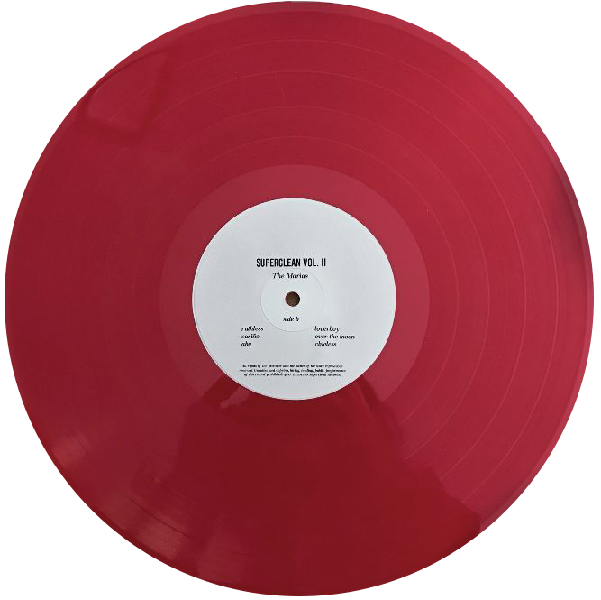

Music is a really big part of my life, I can say this with confidence as my Spotify wrapped showed that I've listened to 61,490 minutes of music last year. This being said, the music I listen to on a particular day, week, month, tends to be very reflective of what I'm feeling, and it helps me navigate my emotions better. This week I found myself listening to the album 'CINEMA' by the Marias. Fire album, I know. Something about the temperature getting colder, the bittersweetness of summer transitioning out, and the horrifying pile of work I had to do this week really made put me in a somber mood that can only be accurately depicted by this album. My favourite song on this album would be Little by Little, but 'Heavy' is a song I always go back to. You should listen to it sometime. ⠀⠀⠀. . ﾟ . . ✦ , . ⠀⠀⠀⠀⠀⠀⠀⠀⠀⠀⠀⠀⠀⠀⠀⠀⠀ * .. . ✦⠀ , * ⠀ ⠀ , *⠀ ⠀ ⠀✦⠀ * .